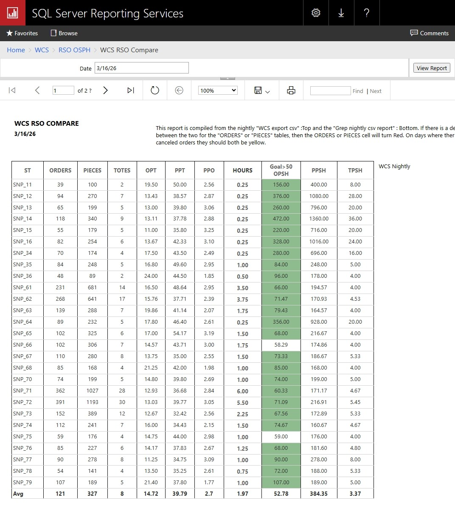

IT Infrastructure | SQL Server | WCS / Warehouse Systems | Production Support | Automation
Senior IT Systems Administrator with 7+ years supporting high-demand production environments. I specialize in troubleshooting complex infrastructure issues, building reporting systems from raw data, and keeping operations running 24/7.
Problem: No reliable visibility into station-level production metrics.
Solution: Built a full SQL Server + SSRS reporting pipeline by parsing raw WCS log files using Bash and SQL transformations.
Impact: Delivered accurate Orders, Pieces, and Totes metrics and identified discrepancies caused by duplicate events and station restarts.

Rebuilt SQL Server environment after failure, restoring ReportServer, linked systems, and ensuring full operational recovery with minimal downtime.
Designed and implemented paging system integrating Algo devices, Bogen stack, and GoTo Connect PBX across multiple zones.
Diagnosed complex production discrepancies caused by duplicate WCS events, station restarts, and order regeneration issues—validated through SQL and log analysis.
Email: dongoins41@gmail.com
LinkedIn: Add your LinkedIn link
GitHub: Add your GitHub link